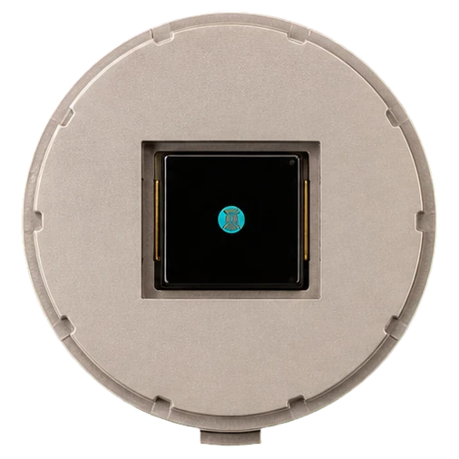
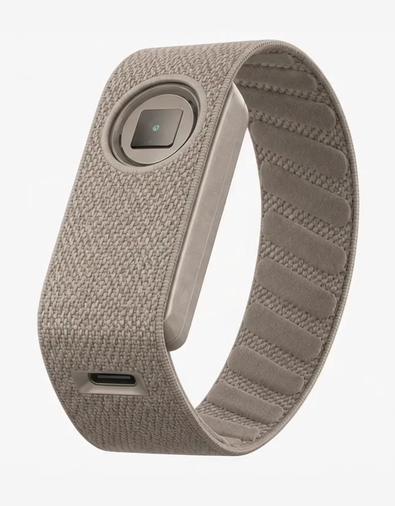
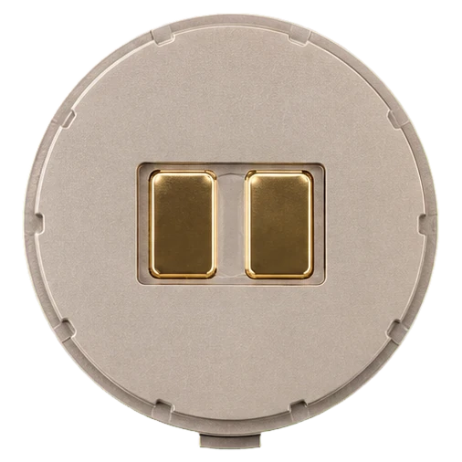
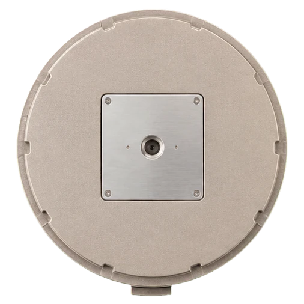
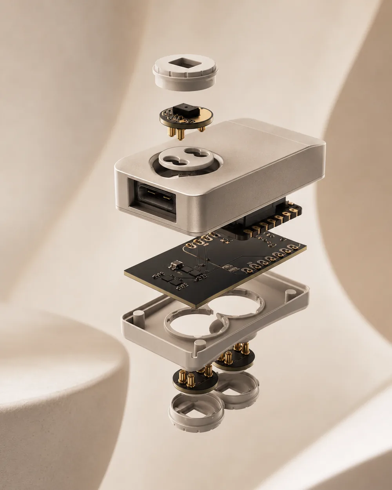
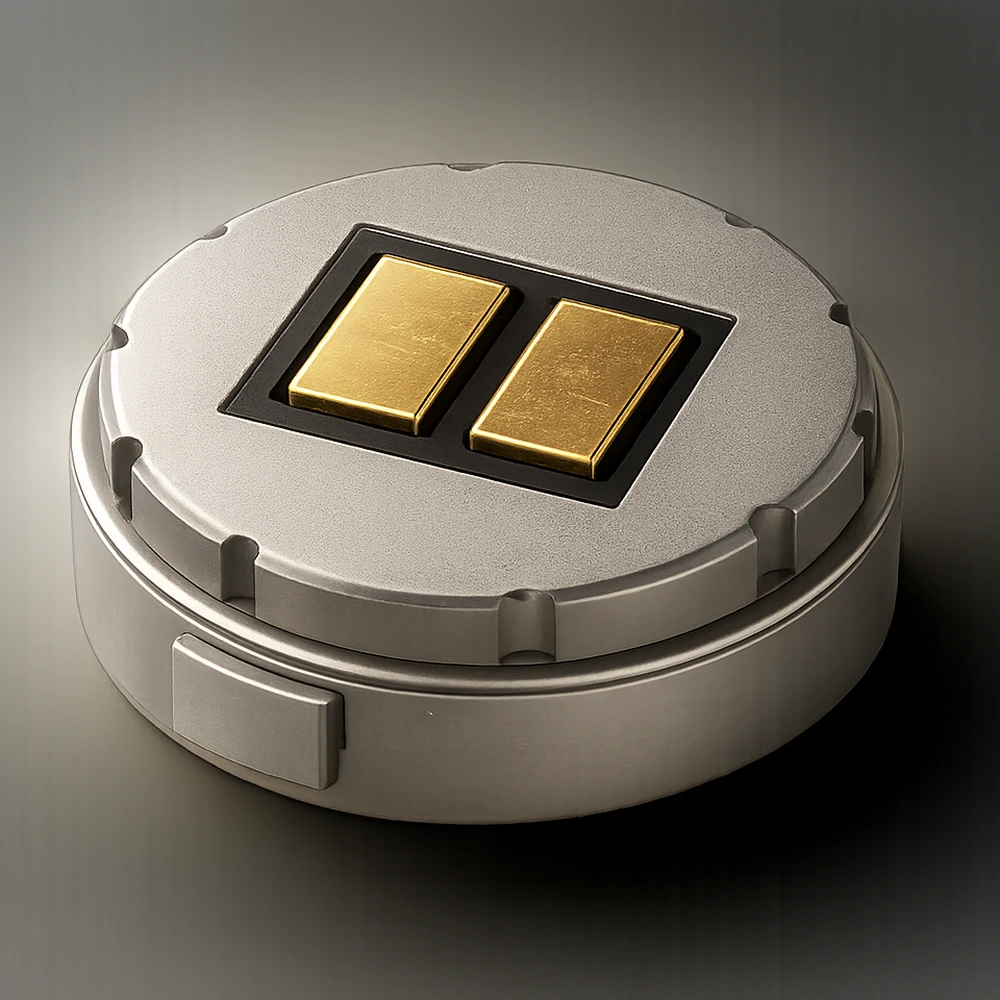
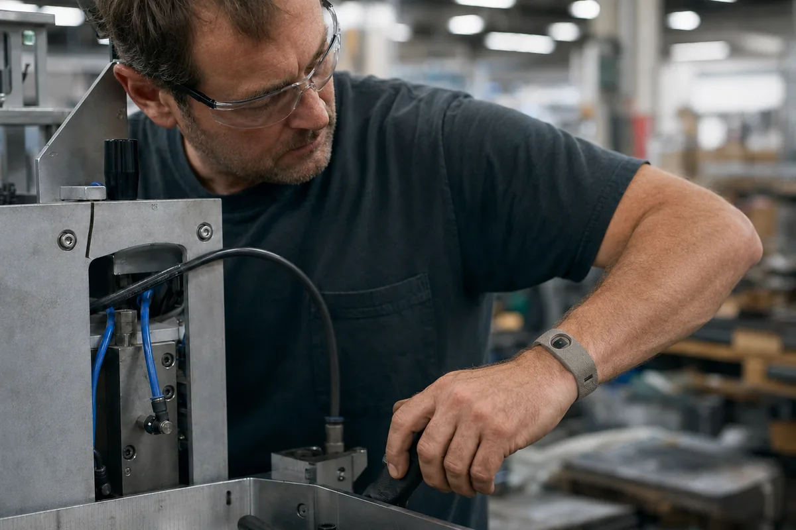
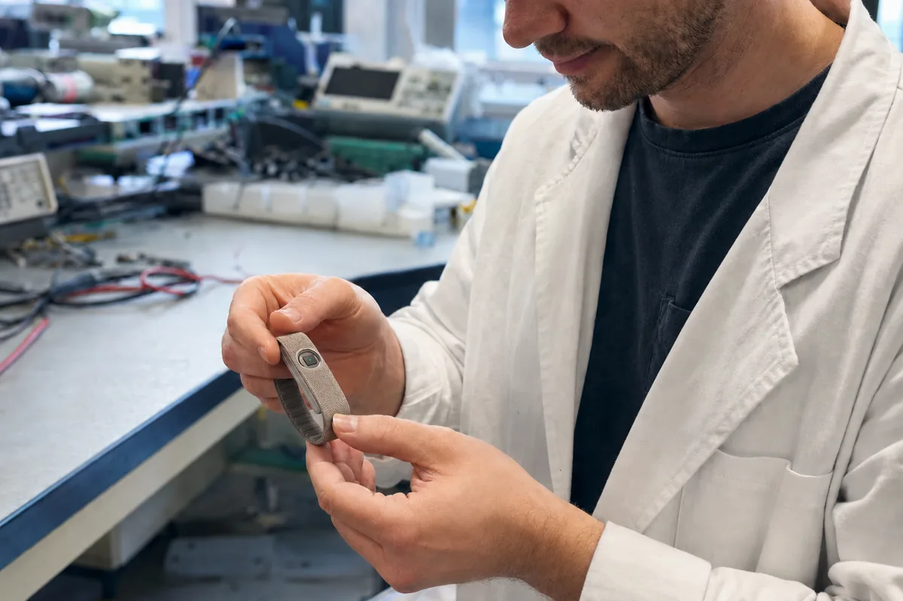
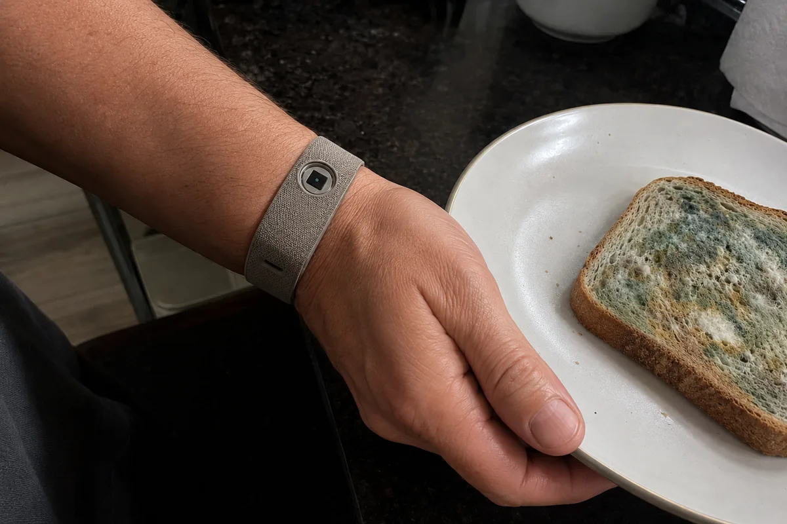
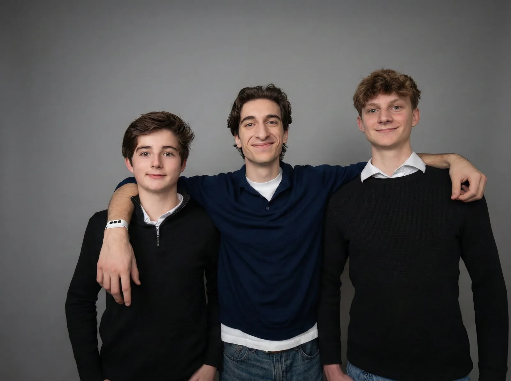

Optical pulse. Heart rate, variability and perfusion at the wrist.
2 body 1 environment
A reusable core. Three swappable sensor pucks. You choose what each configuration measures, and you get the raw data underneath it.


Optical pulse. Heart rate, variability and perfusion at the wrist.

Electrodermal activity across two gold electrodes. Arousal and load.

The air around the wearer. Temperature, humidity and volatiles.
OpenPulse is a modular wearable sensor platform built around a reusable core and swappable sensor pucks.
The core carries the battery, the radio and the clock. The pucks carry everything that changes. When the question changes, you swap a puck, not the product.

The interface
A single mechanical and electrical interface across the whole range. A puck we design next year drops into a core built today.

The signal path
01
Raw sensor data, straight off the die.
Analogue front end
02
Samples, timestamps and buffers every channel.
Battery, radio, clock
03
A reliable link that survives a real work floor.
BLE, reconnecting
04
Your pipeline, your models, your decisions.
Raw stream in
You receive the underlying raw data. Production API in development.

Monitor strain and environment together, so the picture of a shift is a whole one.

Change the sensing between studies without changing the platform or the pipeline.

Track the conditions that affect people and product, where the work actually happens.
We’re engineers and operators building the platform we wish we’d had, because we kept hitting the same wall: one wearable, one fixed set of sensors, one set of questions you’re allowed to ask.

Tell us about your workflow
We’re choosing which pucks to build next based on real workflows. Tell us yours.
Your configuration
Load pucks in the sensor section and they’ll travel with your message.